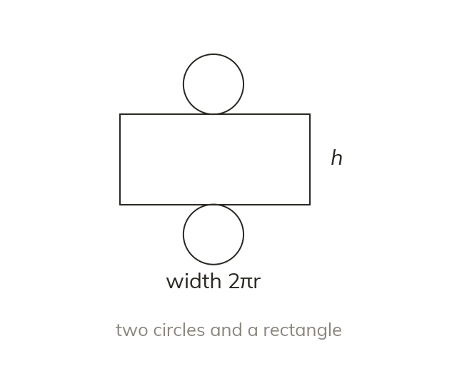

A cylinder's net gives its formula
A cylinder's net is two circles and a rectangle. The rectangle's width is the circumference, 2πr. So surface area = 2πr² + 2πrh.
A cylinder's net is two circles and a rectangle whose width is the circumference, 2 × π × r, giving total surface area 2 × π × r² + 2 × π × r × h.